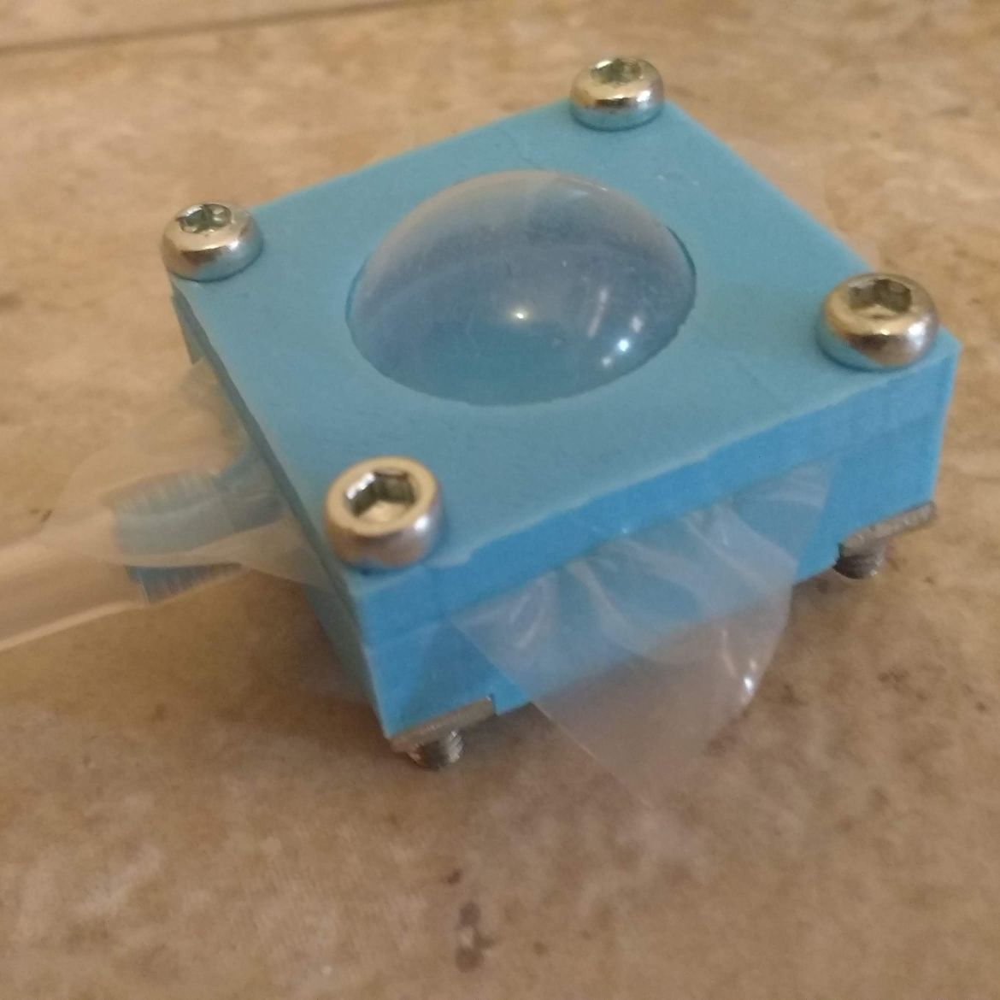

Projet: Pompe pour matelas gonflable
Un matelas gonflable qui se dégonfle pendant la nuit c'est un classique et c'est tellement désagréable. J'ai essayé de le patché, mais je n'ai pas réussit. Je ne voulait pas non plus acheté un autre matelas et mettre le mien à la poubelle.
Alors, j'ai acheté une petite pompe d'aquarium pour qu'elle pompe de l'air toute la nuit quand le matelas se dégonfle. La pompe n'est pas très bruyante et suffit largement pour gonfler, même trop. J'ai donc conçu un interrupteur de pression pour arrêter la pompe de fonctionner lorsque la pression est trop élevé.
Conception
L'interrupteur de pression est composé d'un diaphragme, d'un piston et d'un interrupteur électrique. Au fur à à mesure que la pression de l'air dans le matelas augmente. Le diaphragme gonfle. En gonflant, il pousse sur un piston. Le piston appuie alors sur l'interrupteur électrique se qui déconnecte la pompe.

Comme diaphragme, j'ai utilisé un préservatif que j'ai découpé en carré. Ce n'est pas l'idéal parce que le matériel est un peu trop élastique, mais cela fonctionne.
La plupart des composantes sont imprimés en 3d, à l'exception de la quincaillerie, de l'interrupteur électrique et des tubes pneumatiques.
Télécharger les fichiers FreeCAD
Résultat
Le résultat est assez satisfaisant! Personnellement j'aime bien même avec le bruit de fond d'une pompe pendant que je dors.
Petit hic: La pression doit être ajusté avec ton poids sur le matelas. Quand tu n'es pas sur le matelas, la pompe gonfle beaucoup trop le matelas. Aussi, je n'ai pas testé à 2 sur le matelas, probablement que cela change la pression requise...